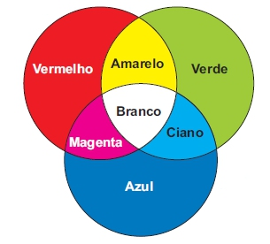
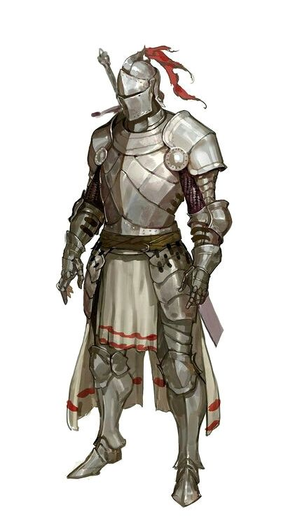
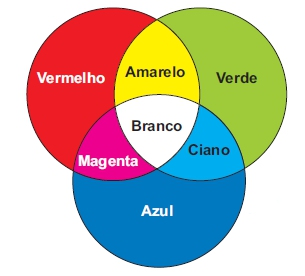
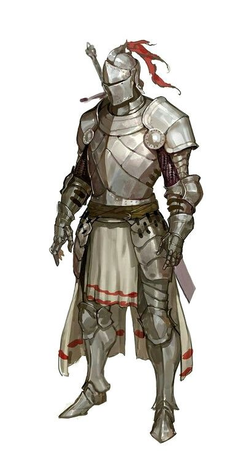

Fatos sobre o Stomatopoda.
Os estomatópodes
São predadores ativos que caçam presas com o auxílio de um sentido de visão muito apurado e capaz de interpretar polarização no espectro ultravioleta e infravermelho). Apresentam uma grande variação de tamanho, que pode ir de poucos milímetros até aproximadamente 40 cm nas espécies maiores. Eles vivem em fundo consolidado, lodoso ou ainda arenoso, onde cavam seus buracos ou aproveitam-se dos orifícios deixados por outros animais para neles se instalar. São animais exclusivamente carnívoros, alimentando-se de camarões, caranguejos, moluscos, peixes e até mesmo outros da mesma ordem. O segundo par de patas, muito desenvolvido, é usado tanto para atacar a presa como para se defender. O urópodo, quando aberto, também funciona para defesa, como um escudo, fechando a galeria em que o animal esteja instalado.
- Reino: Animalia
- Filo: Arthropoda
- Subfilo: Crustacea
- Classe: Malacostraca
- Subclasse: Hoplocarida
- Ordem: Stomatopoda
Têm 16 cones receptores de cores

Nós, humanos, temos três receptores diferentes, então tudo o que vemos se baseiam a grosso modo de três cores.
Já nosso animalzinho vê cores a partir de 16 diferentes receptores
São extremamente resistentes
Para suportar sua própria força as celulas de seu exoesqueleto é tão resistente que pesquisadores as estudam para desenvolver melhores armaduras militares

São muito fortes
Seu golpe para atingir e matar presas chega a 720 km/hr, a velocidade de uma bala. É tão forte e rapido que gera um impacto fortissímo, de 60 kg/cm²
Os estomatópodes
São predadores ativos que caçam presas com o auxílio de um sentido de visão muito apurado e capaz de interpretar polarização no espectro ultravioleta e infravermelho). Apresentam uma grande variação de tamanho, que pode ir de poucos milímetros até aproximadamente 40 cm nas espécies maiores. Eles vivem em fundo consolidado, lodoso ou ainda arenoso, onde cavam seus buracos ou aproveitam-se dos orifícios deixados por outros animais para neles se instalar. São animais exclusivamente carnívoros, alimentando-se de camarões, caranguejos, moluscos, peixes e até mesmo outros da mesma ordem. O segundo par de patas, muito desenvolvido, é usado tanto para atacar a presa como para se defender. O urópodo, quando aberto, também funciona para defesa, como um escudo, fechando a galeria em que o animal esteja instalado.
Têm 16 cones receptores de cores 
Nós, humanos, temos três receptores diferentes, então tudo o que vemos se baseiam a grosso modo de três cores. Já nosso animalzinho vê cores a partir de 16 diferentes receptores
São extremamente resistentes
Para suportar sua própria força as celulas de seu exoesqueleto é tão resistente que pesquisadores as estudam para desenvolver melhores armaduras militares
São muito fortes
Seu golpe para atingir e matar presas chega a 720 km/hr, a velocidade de uma bala. É tão forte e rapido que gera um impacto fortissímo, de 60 kg/cm²